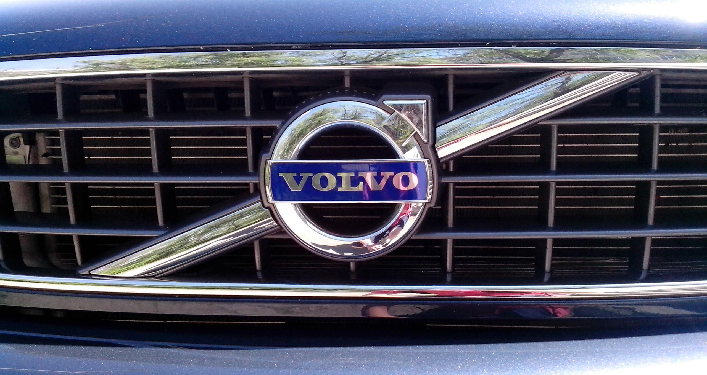
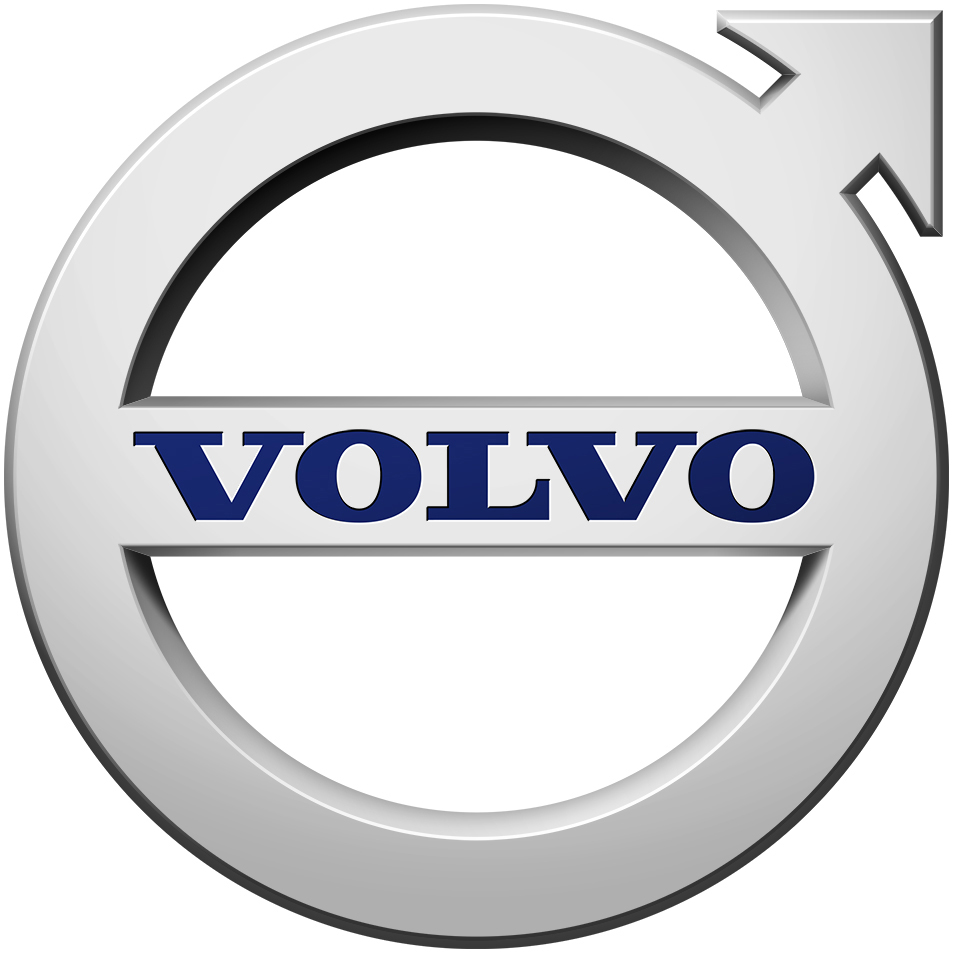
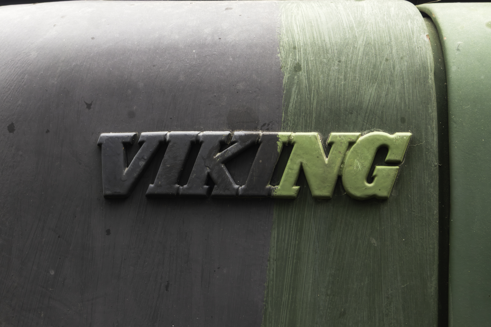

볼보 Volvo
볼보(Volvo)는 1927년 스웨덴 예테보리에서 출발한 자동차 브랜드로, 승용차(볼보 자동차)와 상용차(볼보 그룹)로 분리돼 있다.
최종 업데이트

볼보는 어떤 브랜드인가
볼보 자동차(Volvo Cars)는 1927년 스웨덴 예테보리에서 설립된 프리미엄 자동차 제조사로, 베어링 기업 SKF의 영업이사 아사르 가브리엘손(Assar Gabrielsson)과 엔지니어 구스타프 라르손(Gustaf Larson)이 '스칸디나비아 도로에 견디는 튼튼한 차'를 목표로 함께 창업했다. 같은 해 4월 14일 첫 차 ÖV4(애칭 야콥)가 생산되며 역사가 시작됐다.
두 번의 큰 전환점으로 1999년 포드(Ford)에 인수됐고, 2010년 중국 지리(Geely)홀딩스로 다시 매각됐다. 2024년 76만여 대를 팔며 창립 후 최대 실적을 세운 글로벌 브랜드로 성장했다.
볼보는 어떻게 봐야 할까
볼보의 핵심 차별점은 독일 프리미엄 3사와의 노선 차이다. 벤츠·BMW·아우디가 성능과 위세를 앞세운다면, 볼보는 1959년 3점식 안전벨트(엔지니어 닐스 보린 설계)를 발명하고 그 특허를 전 세계에 무상 공개한 일화에서 보듯 '안전'을 정체성의 중심에 둔다.
전동화에서도 앞섰다. 2024년 순수 전기차를 17만여 대 팔아 전년 대비 54% 늘렸고, 전기차 비중 23%로 레거시 프리미엄 브랜드 중 최고를 기록했다.
다만 2024년 회사는 2030년 100% 전기차 전환 목표를 90~100% 전동화(전기차+플러그인 하이브리드)로 완화했는데, 충전 인프라 지연과 보조금 축소, 관세 불확실성이 배경이다. 지리 인수는 자본과 중국 시장 접근을 주면서도 스웨덴 본사 중심의 독립 경영을 유지하는 구조다.
한국에서는 수입차 시장에서 꾸준한 인기를 누리며 2024년 EX30 같은 소형 전기 SUV로 가격대를 낮춰 대중성을 넓혔다.
볼보는 어떻게 시작되고 성장했나
볼보의 출발은 1924년 가브리엘손과 라르손이 옛 친구로 재회해 스웨덴 독자 자동차를 만들자고 의기투합한 데서 비롯됐다. 두 사람은 베어링 기업 SKF의 지원을 받아 1927년 예테보리에서 SKF 자회사 형태로 회사를 세웠고, 가브리엘손이 경영을, 라르손이 기술을 맡았다.
거친 북유럽 도로에 견디는 견고함이 초기 설계 철학이었고, 이는 곧 '안전'이라는 브랜드 핵심으로 발전했다. 결정적 사건은 1959년이다.
엔지니어 닐스 보린이 3점식 안전벨트를 완성해 양산차에 처음 적용했고, 회사는 인명을 살리는 기술이라는 판단으로 그 특허를 모든 제조사에 무상 개방했다. 이 결정은 이후 전 세계에서 수많은 생명을 구한 것으로 평가된다.
소유 구조의 두 전환점도 역사를 갈랐다. 1999년 포드가 볼보 승용차 부문을 약 64억 5천만 달러에 인수했고(트럭·버스의 볼보그룹과는 이때 분리된 별개 회사로 운영), 2010년 포드가 다시 지리홀딩스에 약 18억 달러에 매각하며 현재의 모회사 체제가 됐다.
볼보의 브랜드 아이덴티티는 무엇인가
볼보의 브랜드 가치관은 '안전'과 스칸디나비아 디자인 철학으로 압축된다. 사람을 중심에 두는 안전 기술, 군더더기를 덜어낸 절제된 북유럽 미니멀리즘이 제품과 메시지 전반을 관통한다.
시각 정체성의 핵심은 원과 화살표가 결합된 '아이언 마크(iron mark)' 엠블럼으로, 철(鐵)과 강인함을 상징하는 고전적 기호를 현대적으로 다듬어 후드와 그릴에 사용한다. 타깃은 과시보다 실용·안전·지속가능성을 중시하는 가족 단위와 도시형 프리미엄 소비자다.
브랜드 보이스는 차분하고 신뢰감 있는 어조로, 자극적 수사보다 '사람을 지킨다'는 일관된 약속을 강조한다.
볼보의 대표 제품과 서비스는 무엇인가
제품군은 SUV·세단·왜건·전기차로 구성되며 SUV가 중심축이다. 시그니처 모델로는 대형 SUV XC90, 베스트셀러 중형 SUV XC60, 소형 순수 전기 SUV EX30이 꼽히고, 차세대 전기 플래그십 EX90·ES90이 라인업에 합류하고 있다.
한국 시장 기준 가격대는 EX30이 약 3,991만 원대(코어 트림)부터 시작하며, EX30 크로스컨트리는 약 5,516만 원 수준이고, XC90·S90 등 상위 모델은 그 이상 고가대다. 유통은 공식 수입사를 통한 전시장·서비스망과 온라인 판매 채널을 병행한다.
볼보는 지금 어떤 상태인가
본사는 스웨덴 예테보리(토슬란다)이며, 모회사는 중국 지리홀딩스다. 직원은 전 세계 약 4만여 명 규모다.
2024년 소매 판매는 76만 3천여 대로 사상 최대를 기록했고, 같은 해 매출은 회사 역사상 처음으로 4천억 크로나를 넘어섰다. 합작·관계사 제외 코어 영업이익은 약 270억 크로나로 영업이익률 6.8%를 기록했다.
순수 전기차 판매는 17만여 대(비중 23%)였다. 다만 회사는 2025년을 시장 여건 악화로 도전적인 해로 전망했다.
볼보 연혁 — 주요 사건은 언제였나
볼보 로고는 어떻게 변해왔나
대표 로고대표 브랜드 마크
BI/CI 아카이브보관 이미지 2
BI/CI 아카이브 3보관 이미지 3
BI/CI 아카이브 5보관 이미지 5자주 묻는 질문
볼보는 어느 나라 브랜드인가요?
볼보는 스웨덴의 모빌리티 브랜드입니다.
볼보는 언제 설립되었나요?
볼보는 1927년 설립되었습니다.
볼보의 브랜드 아이덴티티는 무엇인가요?
볼보의 브랜드 가치관은 '안전'과 스칸디나비아 디자인 철학으로 압축된다.
볼보의 대표 제품은 무엇인가요?
제품군은 SUV·세단·왜건·전기차로 구성되며 SUV가 중심축이다.
볼보의 본사는 어디에 있나요?
본사는 스웨덴 예테보리(토슬란다)이며, 모회사는 중국 지리홀딩스다.
볼보의 공식 웹사이트는 어디인가요?
볼보의 공식 웹사이트는 https://www.volvocars.com/ 입니다.
출처와 검증
볼보 관련 참고: 공식 웹사이트. 브랜드명은 한글과 원어를 함께 표기하되 데이터에 없는 표기는 만들지 않습니다. 기원 국가·설립연도는 검수된 정의문에서 확인된 값을 우선하고, 없을 때만 공식 웹사이트 URL이 일치하는 위키데이터 개체의 값을 씁니다.